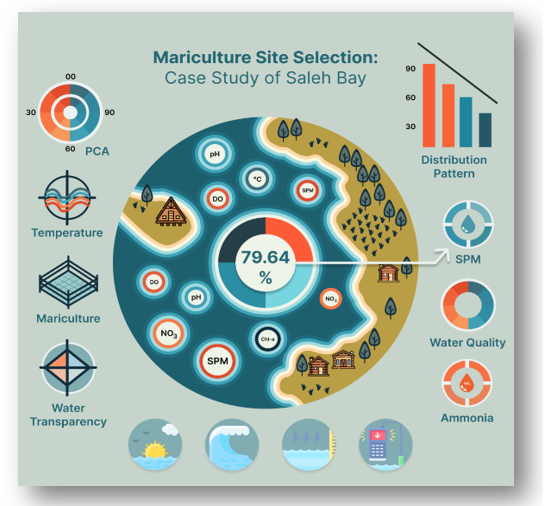
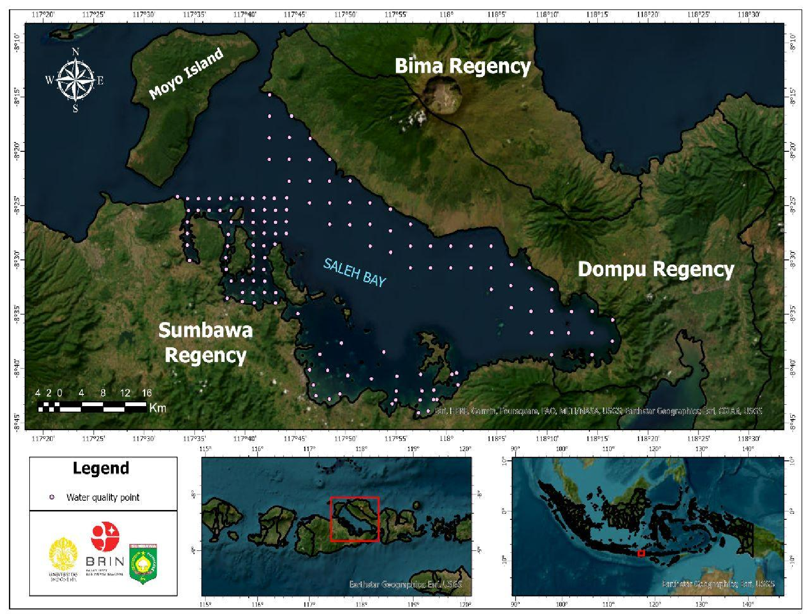

Background and objectives
Choosing a location for mariculture is very important because it affects water quality, while problems that affect cultivation and the environment can be avoided by choosing the right location. The objective of this study is to develop a methodological strategy for integrating and analyzing spatial data, which will facilitate the identification of optimal locations for mariculture. In this context, the ecosystem approach to mariculture is analyzed with an emphasis on evaluating water quality conditions and determining primary productivity values.
Highlights
Integration of water quality and primary productivity contributes to site selection to support sustainable production; Good water quality and productivity reduce potential environmental risks and provide optimal production results; Suitable areas can be well distinguished and classified in a suitability matrix scale. This approach is relatively easy, efficient and effective to apply to various coastal systems.
Keywords
Geographic information system (GIS) Mariculture Principal component analysis (PCA) Primary productivity Water quality
Subjects
Marine and coastal environmental pollution and management
————————————————————————
This study was funded by RIIM G-2/2022, BRIN-Indonesia Endowment Fund for Education Agency [LPDP]. National Research and Innovation Agency [Grant number 82/II.7/HK/2022]. The authors also thanks to the Research Center for Conservation of Marine and Inland Water Resources, BRIN; Sumbawa Regency Government (PEMDA) and School of Environmental Science, University of Indonesia (Kintan N. Ekawati). Full text is available here.
Water quality parameter data was analyzed using principal component analysis, values, and distribution of primary productivity using the kriging interpolation method using geographic information system. Spatial analysis employing Geographic Information System applications is used to evaluate the appropriateness of locations for mariculture.
The distribution pattern of primary productivity is strongly influenced by the distribution of phytoplankton and the highest concentration values are located in coastal waters and small islands. The analysis identified three primary components that account for 79.64 percent of the results. The most influential factors include suspended particulate matters, nitrate, temperature, salinity, ammonia, current, and water transparency. According to the study results, the principal component values indicate that the most affected regions by pollutant pressure are agricultural lands that drain into rivers and watersheds, along with coastal residential neighborhoods.
The status of water quality is the main limiting factor in determining the location of mariculture, therefore it is necessary to relocate existing mariculture, improve agricultural cultivation techniques, and/or regulate the use of pesticides that not carried out during the rainy season. These findings may assist the appropriate authorities in the selection and oversight of mariculture sites. The innovative aspect of this study lies in its focus on adaptive management of sustainable marine cultivation, designed to align with regional conditions and promote ecological health alongside the socio-economic prosperity of local communities.